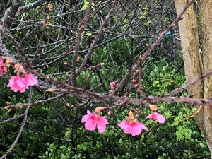

うるがいの話 ある日
最新: ⅮＸ人材育成【うるがいの話 ある日】とは 一日だけのプログです
『うるがいの話』の最新一日だけのプログで、通信料が少なく経済的だ。カニの画像をクリックすると全ての日付が載る『うるがいの話』サイトを表示します
|
|
【うるがいの話】 うるがい(ｳﾙｶﾞｲ urugai)とは、『もずくがに』の名前でとても大きくなります。 |
|---|---|
|
|
【カミマヤーの話】 猫のことを方言でマヤーといいます。カミマヤー（kamimayaa）とは、神の猫のことです。 |
|
【タナガーの話】 たながー（ﾀﾅｶﾞｰtanagaa）とは手長えびのことで、何種類かあり大きいのは車 エビぐらいになります。 |

|
【ぶながぁの話】 ぶながー(bunagaa)とは、赤い髪の毛、赤い身体、そして身長は１ｍ２０ｃｍ ぐらい、川の蟹を食べているの目撃された。場所は沖縄県国頭郡大宜味村のと ある村僕の隣近所に住んでいる爺さんから、聞いた話です。 |
|
|
【ギーマの話】 ギーマ(giima)とは、山原の里山に咲くスズランに似た、 花を付けます。実は食べられます、 気が付くと口の周りが紫になっています。 |
2022年02月03日 (木）ⅮＸ人材育成
15:55
昨日の夜、『ⅮＸ人材育成』なるテレワーカーの育成講義の説明をＺＯＯＭで
受けた。・・・・なるほど、ＩＴの知識は特に必要なくビジネスモデルを考え
ることが出来る人を育成し、この講義（課題が提出される）を合格した人（講
師がこれだって思った人が選抜される）が、実際に地方自治体を相手に業務の
課題を解決できる案を提案すること（でお金に結びつくのかな）。講師はとあ
るＩＴ企業の人（還暦に近い）で、一緒に仕事をできる人を見つけ商売につな
げようという感じをうけた。ツイターの話がでたが、殆ど使ってないしついて
いけなかった。『電話が多くて困っている会社がいた場合、どうすればその課
題に対処するかを考えてください。電話機や人を増やすではダメですよ、なぜ
電話が多くかかってくるのですか、と考え、そもそも電話がかからないように
することを提案する・・』らしい、・・・むふむふ、しがらみ（固定概念）だ
らけのオヤジには無理だな。

動画編集研修に参加申し込みした方で、まだGoogleクラスルームへの参加手
続きが終わっていない方がいます。
研修はすでにスタートしていますので、早めに参加手続きを終えて下さい（過
日Googleクラスルームからメールが送られています）
え！、メール来てないし、早速メールが届いていない旨を講師に返す。しばら
く待ち、Gmailメールが届く、Googleクラスルームへ入室する。こうして研修
の日々は始まった。
１５時４９分 ビットコインの総資産 ￥１２、２６１↓